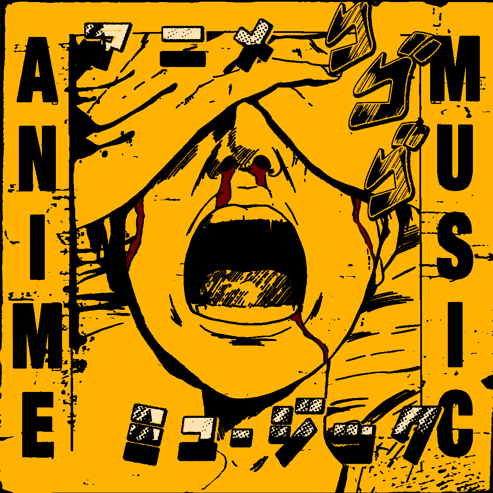
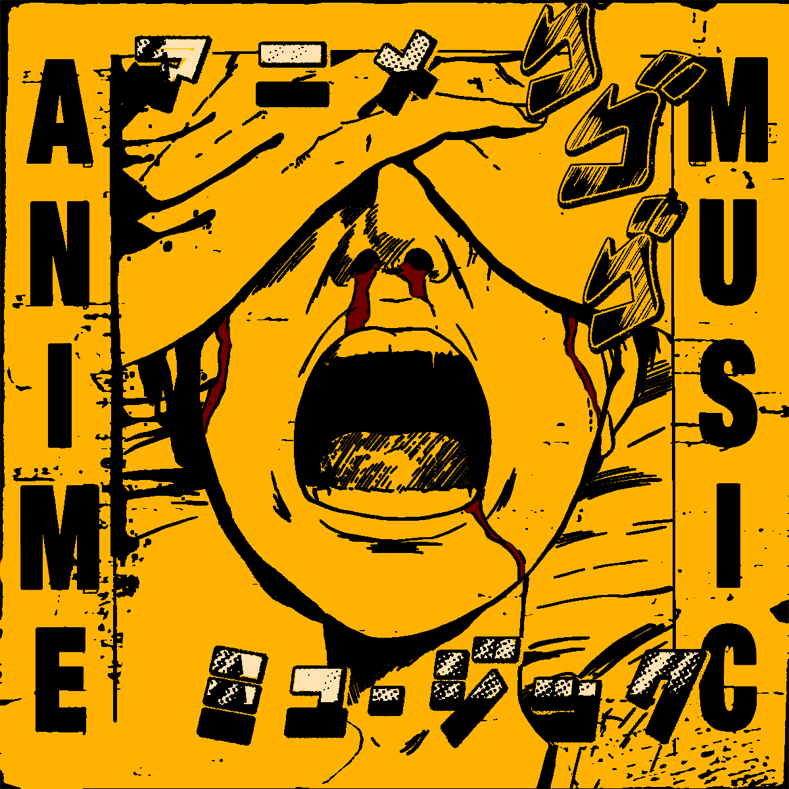

highlighted work
Villian's Theme (feat. Paper Geese)
Anime Music
Check out the latest single for my project Anime Music. I did some composition work, played keys/synths, and assisted with the production.
highlighted work
Villian's Theme (feat. Paper Geese)
Anime Music
Check out the latest single for my project Anime Music. I did some composition work, played keys/synths, and assisted with the production.
I do composition, recording, mixing, and mastering work at City Biking Music in Long Island City.
Allow me to lend my ears to your project. Through signal correction, gain adjustment, and careful routing through compressors and equalizers, my mastering process focuses close attention to detail and brings your track up to a competitive loudness. All in the box.
Unlimited revisions. The job is not done until you are completely satisfied.
Reach out to me at pjpc.nyc@gmail.com.
Send me a message on Instagram.
Check out some of my recent work below.

Anime Music brings back that feeling you had during the early days of YouTube - when you were watching Naruto AMVs set to the sounds of bands like Linkin Park and My Chemical Romance.
Using modern production techniques, Anime Music combines genres like pop punk, emo, and indie to revitalize that inescapable mid-2000s alt-rock sound. The music features driving guitar riffs, explosive vocals, and propulsive drumming that will transport you back to the days of laying in bed late at night glued to the screen of your first generation iPod touch.
With influences ranging from Jimmy Eat World and Paramore to contemporaries like Turnstile and PUP, Anime Music issues a fresh and exciting take on a beloved era of music culture.
Check us out on Instagram and listen to our music on Spotify or Apple Music.